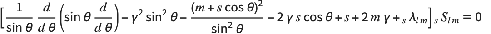

Spin-weighted Spheroidal Harmonics Package
The SpinWeightedSpheroidalHarmonics package provides functions for computing spin-weighted spheroidal harmonics and their associated eigenvalues.
The spin-weighted spheroidal harmonics are a generalisation of the standard spherical harmonics to include spin-weight s and spheroidicity γ. They are solutions of the spin-weighted spheroidal equation

.Much like the spherical harmonics, which arise through the use of separation of variables to find solutions to Laplace's equation in spherical domains, the spin-weighted spheroidal harmonics appear when applying separation of variables in spheroidal domains. In the case s=0, they are used for scalar fields, while for s≠0 they are typically used for vector and tensor fields.
A common application of the spin-weighted spheroidal harmonics is in finding separation-of-variables solutions of the Teukolsky equation in Kerr space time. There, the spin-weight s represents the type of field (s=0 for scalar fields, s=± for neutrino fields, s=±1 for electromagnetic fields and s=±2 for gravitational fields) and the spheroidicity γ=a ω is determined by the Kerr spin parameter a and the frequency ω.
Evaluation of Spin-Weighted Spheroidal Harmonics
The spin-weighted spheroidal harmonics and their associated eigenvalues are typically evaluated using series expansions in a complete basis of orthogonal functions. The SpinWeighedSpheroidalHarmonics package supports two choices of basis:
1. Leaver's expansion in powers of cos2 .
2. Expansion in a basis of spin-weighted spherical harmonics [Hughes].
Both expansions converge exponentially with the number of terms included so that in practice only a finite number of basis terms need to be included.
| SpinWeightedSpheroidalHarmonicS | Compute the spin-weighted spheroidal harmonic. |
| SpinWeightedSpheroidalEigenvalue | Compute the spin-weighted spheroidal eigenvalue. |
| SpinWeightedSphericalHarmonicY | Compute the spin-weighted spherical harmonic. |
Numerical Evaluation of the Harmonic
Numerical evaluation of the harmonic is achieved by first computing coefficients in the expansion and storing them in a SpinWeightedSpheroidalHarmonicSFunction. Then, the harmonic can be efficiently evolved for any angles θ and ϕ by evaluating the basis functions and summing using the precomputed coefficients. This first step is quite fast, but is slower than the second step, so when evaluating for more than one angle it is more efficient to compute and store the coefficients just once:
Numerical Evaluation of the Eigenvalue
The eigenvalue is also numerically computed by summing an infinite series of terms. As with the harmonic, the series for the eigenvalue converges rapidly so that only a few terms need to be computed.
Precision of numerical evaluation
When evaluating both the harmonic and the eigenvalue, the precision of the output tracks the precision of the input by ensuring that a sufficient number of terms have been included and that the coefficients have been computed sufficiently accurately. This does not guarantee that the precision of the output matches that of the input. There is typically a loss of precision
We can obtain output of a desired precision using N and providing exact inputs:
N does not affect the arguments of a SpinWeightedSpheroidalHarmonicS as it has the NHoldAll attribute. This is a deliberate choice as it is impossible to know how many series coefficients are required and to what accuracy without also knowing the values of θ and ϕ, but they are not provided as arguments to SpinWeightedSpheroidalHarmonicS. We can work around this by defining our own helper function which also knows about θ and ϕ:
We can define a function to achieve the same t evaluate the eigenvalue using an expansion in spin-weighed spherical harmonics: